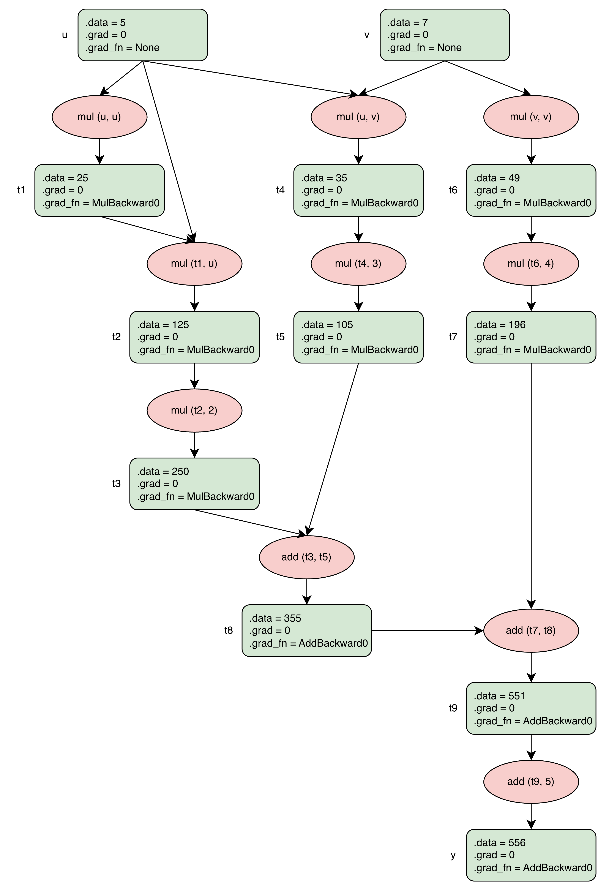
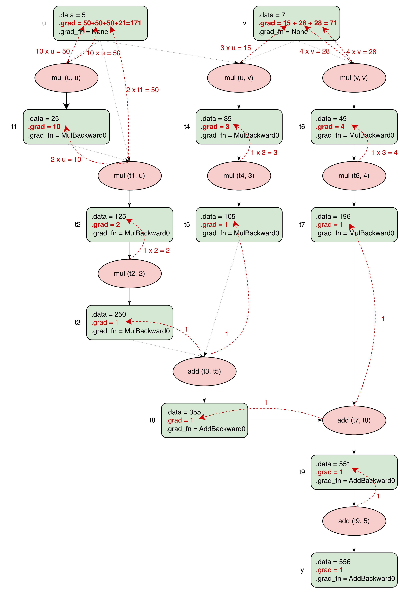
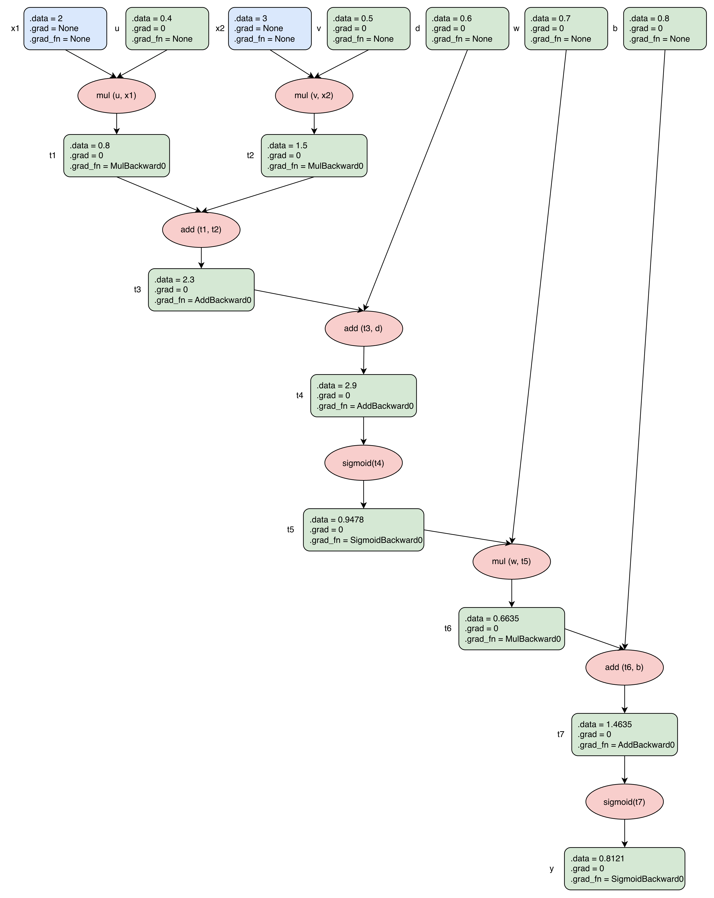
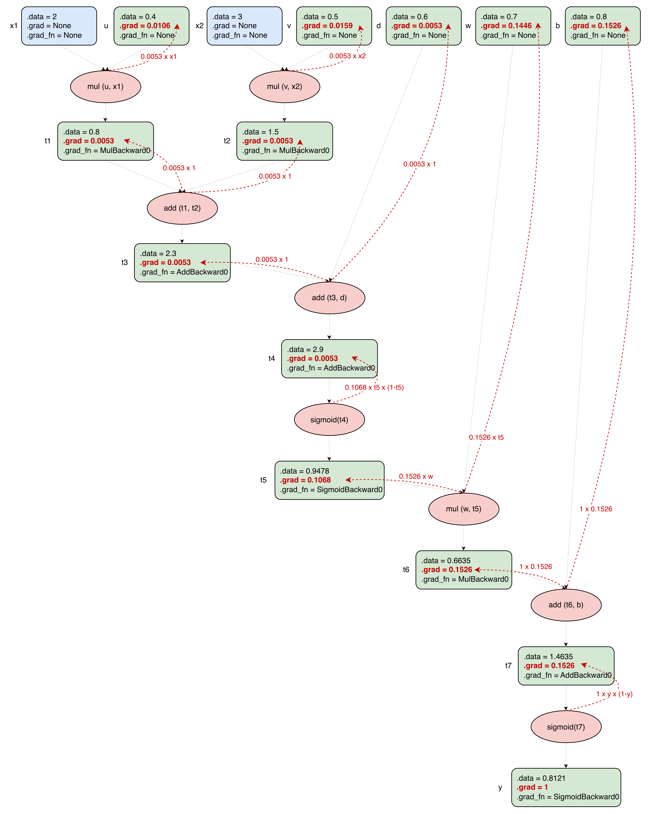
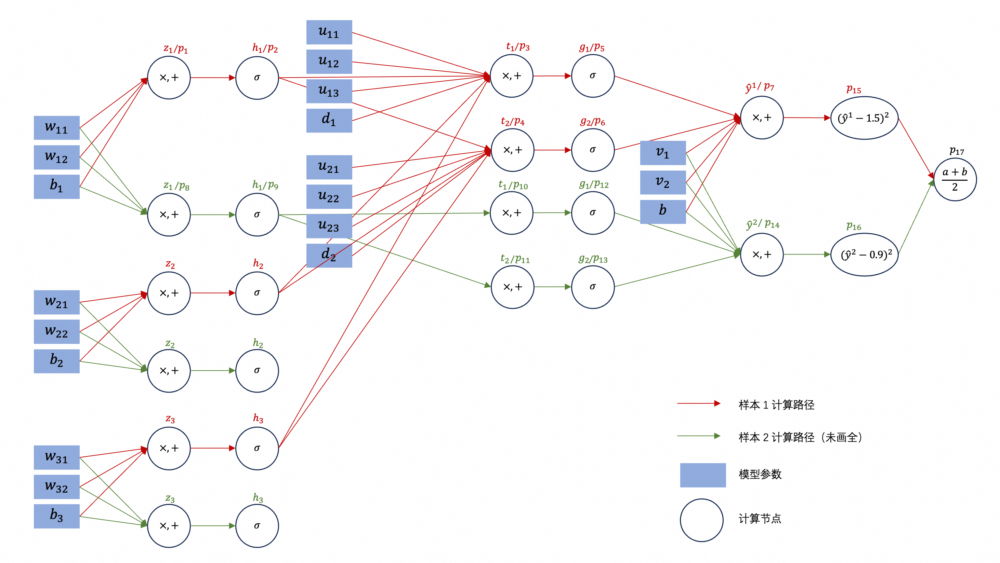

PyTorch 自动求导：从计算图、链式法则到三个 backward 规则。
计算图 (1)
PyTorch 会记录下来 tensor 的计算过程，也就是保留计算图（有向无环图DAG, Directed Acyclic Graph）。
假如：
- 模型函数：$f_{\boldsymbol{\theta}}(\boldsymbol{x})$；$\boldsymbol{\theta} = \begin{bmatrix} \theta_1, \theta_2, \theta_3, \dots \theta_m \end{bmatrix}^T$，$m$ 个参数。
- 损失：MSE (Mean Square Error)；
- 一个 Batch 包含 $B$ 条训练数据：$(\boldsymbol{x}^i, y^i)$，$i = 1, 2, \dots, B$；
那么，损失函数就是：
$$
L_{\boldsymbol{\theta}} = \frac{1}{B}\sum\limits_{i=1}^{B} (f_{\boldsymbol{\theta}}(\boldsymbol{x}^i) - y^i)^2
$$
注意：$L_{\boldsymbol{\theta}}$ 中只有 ${\boldsymbol{\theta}}$ 是未知数；$\boldsymbol{x}^i$ 和 $y^i$ 都是训练数据；
函数 $f$ 非常复杂，包含很多激活函数。而且对于深度学习，激活函数还会发生嵌套（展开的话，下一层嵌套上一层）。所以，想要把 $L_{\boldsymbol{\theta}}$ 展开成关于 $\theta_1, \theta_2, \dots, \theta_m$ 的独立项是不可能的，PyTorch 也根本不会做这样的尝试。那么 PyTorch 是怎么做的呢？
假设初始参数是 $\boldsymbol{\theta}^0$，PyTorch 会根据 $L_{\boldsymbol{\theta}}$ 一步一步地进行前向计算（forward pass），就像执行程序一样。每一步都是一个运算节点（记为 $p_i$，如乘法、加法、sigmoid、平方、求均值等）。计算完成之后，PyTorch 就记录了：
$$
L^0 = p_N(\dots p_3(p_2(p_1(\boldsymbol{\theta}^0))))
$$
这就是计算图DAG。
链式法则 (2)
求嵌套函数导数，使用链式法则。
如果：
$$
y = f_3(f_2(f_1(x)))
$$
那么：
$$
\frac{dy}{dx}
=
f_3’(f_2(f_1(x)))
\cdot
f_2’(f_1(x))
\cdot
f_1’(x)
$$
每一层只需要知道自己的局部导数，再乘起来即可。
把这个规则套用到计算图 $L^0 = p_N(\dots p_3(p_2(p_1(\boldsymbol{\theta}^0))))$ 上，对于参数 $\theta_k$，有：
$$
\frac{\partial L}{\partial \theta_k}
=
\frac{\partial p_N}{\partial p_{N-1}}
\cdot
\frac{\partial p_{N-1}}{\partial p_{N-2}}
\cdot
\cdots
\cdot
\frac{\partial p_2}{\partial p_1}
\cdot
\frac{\partial p_1}{\partial \theta_k}
$$
其中每个因子 $\frac{\partial p_i}{\partial p_{i-1}}$ 都是局部导数，只需知道节点 $p_i$ 是什么运算就能直接算出来（例如：加法节点导数为 1；乘法节点导数为另一个因子；sigmoid 导数为 $\sigma(p_{i-1})(1-\sigma(p_{i-1}))$；平方节点导数为 $2x$）。
PyTorch 就是把这些局部导数逐层累乘，从而得到 $\frac{\partial L}{\partial \theta_k}$。
PyTorch 从 $L^0$ 出发，沿计算图反向逐层计算局部导数并累乘，最终得到 $L$ 对 $\theta_k$ 的偏导数 $\frac{\partial L}{\partial \theta_k}$，存入 $\theta_k$ 的 .grad。
对 $\boldsymbol{\theta}$ 的每个分量求偏导数，就得到 Error Surface 上 $\boldsymbol{\theta}^0$ 处的梯度。
例1 (3)
这个例子很小，手算可完成；但包含乘法链（$u^3$）、交叉项（$uv$）、平方（$v^2$），覆盖了 backward 的几种典型行为。
- $y = 2u^3 + 3uv + 4v^2 + 5$
- 初始值 $u = 5$，$v = 7$。
先计算解析解：
$$
\begin{aligned}
\frac{\partial y}{\partial u} & = 6u^2 + 3v = 171 \\
\frac{\partial y}{\partial v} & = 3u + 8v = 71 \\
y & = 556
\end{aligned}
$$
forward：边算边建图 (3.1)
PyTorch 把 $y$ 拆成原子运算，边计算边建 DAG。图中绿框是 tensor（带 .data / .grad / .grad_fn 三个字段），粉椭圆是运算节点，黑箭头是数据流：

几个观察：
- u、v 是叶子：
.grad_fn = None（没人创建它们），requires_grad=True，是 backward 求梯度的目标； - 非叶子 tensor 的
.grad_fn就是创建它的运算节点，即“我从哪来”，backward 沿它往回走； - 常数 2/3/4/5 写在运算标签里、不画成节点：它们
requires_grad=False，是梯度流的死胡同。（即使显式写成torch.tensor(2.0)，它确实是 0 维 tensor、mul 也会把它当“另一因子”存起来，但因为不要求梯度，图里省略。） - 此刻所有
.grad = 0：图1 是“forward 完成、backward 未跑”的快照。
backward：沿图反向发梯度 (3.2)
Backward 从 $\frac{\partial y}{\partial y} = 1$ 出发，反向走 DAG。每个运算节点收到流入梯度后，按自己的规则发回给各输入；图2 中红色虚线箭头就是梯度贡献，标签是贡献量：

注：其实中间 tensor 的累加值不是写进 .grad，而是放在一块临时缓冲区，转发后释放。本图为了示意 backward 过程，把缓冲区里的值画成了框内 .grad。
规则：
- add：流入梯度原样复制给每个输入；
按照链式法则，假如
$$
\begin{aligned}
\frac{\partial{y}}{\partial{u}} & = C_1 C_2 \dots C_k \frac{\partial{p_{k+1}(u,v)}}{\partial{u}} \\
p_{k+1}(u,v) & = p_{k+2}(u,v) + q_{k+2}(u,v)
\end{aligned}
$$
其中 $C_1 C_2 \dots C_k$ 是 backward 过程中累积的常量乘积，记为 $C$，就是流入梯度，被原样复制给上游的两个输入 tensor。则：
$$
\begin{aligned}
\frac{\partial{y}}{\partial{u}} & = C \cdot 1 \cdot \frac{\partial{p_{k+2}(u,v)}}{\partial{u}} + C \cdot 1 \cdot \frac{\partial{q_{k+2}(u,v)}}{\partial{u}} \\
\frac{\partial{y}}{\partial{v}} & = C \cdot 1 \cdot \frac{\partial{p_{k+2}(u,v)}}{\partial{v}} + C \cdot 1 \cdot \frac{\partial{q_{k+2}(u,v)}}{\partial{v}}
\end{aligned}
$$
以图2中 add(t3,t5) 为 $p_{k+1}$，则
$$
\begin{aligned}
C & = 1 \\
p_{k+2} & = t_3 \\
q_{k+2} & = t_5 \\
\end{aligned}
$$
而 $\frac{\partial{y}}{\partial{u}} = \frac{\partial{t_3}}{\partial{u}} + \frac{\partial{t_5}}{\partial{u}}$ 正是图上从 add(t3,t5) 射出的两条标着 1 的红箭头。
注意：从公式看，应该有4条箭头（4个$C \cdot 1$），但为什么只有2条呢？因为 add 节点自己只干一件事——把 $C$ 原样复制给两个输入，它不知道 $u$ 和 $v$ 的存在，所以在它这一层永远只有 2 条箭头。关于 $u$ 和 $v$ 的拆分发生在两条箭头继续往上走之后，由各分支自己的链条完成；公式是把这”往上走”的过程一步压缩写完了，才显得有 4 项（假如有3个参数则有6项，4个参数会有8项，以此类推）。
这有一个好处，add 根本不用关心两个分支是否和什么参数有关，而只关心“局部”；add 射出的每条箭头（共 2 条）都是一个”载体”，载着 $C$ 往上走；走到分支链条里，才裂成”给$u$的一份和给$v$的一份”：$t3$ 链裂成$u$的 $150$和$v$的$0$（$t3$和$v$无关），$t5$链裂成$u$的$21$和$v$的$15$。
或许，应该把参数抽象，写成如下形式，对应add的两个箭头：
$$
\frac{\partial{y}}{\partial{\boldsymbol{\theta}}} = C \cdot 1 \cdot \frac{\partial{p_{k+2}(\boldsymbol{\theta})}}{\partial{\boldsymbol{\theta}}} +
C \cdot 1 \cdot \frac{\partial{q_{k+2}(\boldsymbol{\theta})}}{\partial{\boldsymbol{\theta}}}
$$
本质上就是$(C(f(x) + g(x)))^{\prime} = C \cdot 1 \cdot f^{\prime}(x) + C \cdot 1 \cdot g^{\prime}(x)$。至于 $f^{\prime}(x)$ 和 $g^{\prime}(x)$ 包含哪些参数，在后续 backward 的过程中逐层分发，本节点只处理“局部导数”。
- mul：流入梯度 $\times$ “系数”
按照链式法则，假如
$$
\begin{aligned}
\frac{\partial{y}}{\partial{\boldsymbol{\theta}}} & = C_1 C_2 \dots C_k \frac{\partial{p_{k+1}(\boldsymbol{\theta})}}{\partial{\boldsymbol{\theta}}} \\
p_{k+1}(\boldsymbol{\theta}) & = p_{k+2}(\boldsymbol{\theta}) \cdot q_{k+2}(\boldsymbol{\theta})
\end{aligned}
$$
其中 $C_1 C_2 \dots C_k$ 是 backward 过程中累积的常量乘积，记为 $C$，就是流入梯度。则
$$
\frac{\partial{y}}{\partial{\boldsymbol{\theta}}} = C \cdot q_{k+2} \frac{\partial{p_{k+2}}(\boldsymbol{\theta})}{\partial{\boldsymbol{\theta}}} +
C \cdot p_{k+2} \frac{\partial{q_{k+2}}(\boldsymbol{\theta})}{\partial{\boldsymbol{\theta}}}
$$
本质上就是$(Cf(x)g(x))^{\prime} = Cg(x)f^{\prime}(x) + Cf(x)g^{\prime}(x)$。至于 $f^{\prime}(x)$ 和 $g^{\prime}(x)$ 包含哪些参数，在后续 backward 的过程中逐层分发，本节点只处理“局部导数”。
计算对分支 $p_{k+2}(u,v)$ 的贡献时，把$q_{k+2}(u,v)$ 看做系数；相反，计算对分支 $q_{k+2}(u,v)$ 的贡献时，把$p_{k+2}(u,v)$ 看做系数。并且，和add相同，mul也不知道且不关心每个分支上有哪些参数，而只关心“局部”。
以图2中mul(t1,u)为例：对$u$的贡献是$2 \times t1$（2是流入梯度，t1是系数）；对t1的贡献是$2 \times u$（2是流入梯度，$u$是系数）。
注意：对于二次方，同样成立。看mul(u,u)：把左边$u$看做系数右边$u$看做变量，贡献$10 \times u$；把右边$u$看做系数左边$u$看做变量，还是贡献$10 \times u$，所以mul(u,u)对$u$贡献了两个$50$。 $10u + 10u = 10 \times 2u$，即$\text{流入梯度} \times (u^2)^{\prime}$，和微分公式对得上。
- 分叉tensor：所有入边贡献累加
分叉 tensor 指被多个消费者节点使用（或占同一消费者多个槽）的 tensor：$u$ 被 mul(u,u)、mul(t1,u)、mul(u,v) 三处使用；$v$ 被 mul(u,v) 和 mul(v,v) 两处使用。收到多笔贡献时，必须逐笔相加：
$$
\text{grad}(t) = \sum_{\text{每条入边}} \text{该入边的贡献}
$$
累加值就是$\frac{\partial{y}}{\partial{t}}$——图2 中每个框里的红字 .grad 就是它。
落地到图2：$u$ 有 4 条入边，贡献分别为 $50$、$50$、$50$、$21$，累加结果是 $171$；$v$ 有 3 条入边，贡献分别为 $28$、$28$、$15$，结果是 $71$。
这条规则并非叶子专属：中间 tensor 上同样发生累加。比如另有一张图 m = mul(a,a)（a 是叶子），m 被 mul(m,2) 和 mul(m,5) 两个分支消费，则m收到$2$和$5$两笔贡献，累加得 $\text{grad}(m) = 7$（retain_grad() 可见），再以 $7 \times 2a$ 继续下传。中间 tensor 与叶子的区别在”存”不在”加”：中间 tensor 把累加值传给自己的输入，传完即弃（.grad 默认为 None）；叶子是终点，累加值落盘进 .grad。
注：叶子的累加是 +=，反复调用 backward() 会继续叠加，所以训练循环里要先 zero_grad()。
有了以上3条规则，沿红箭头从下往上：
| 步 | 运算节点 | 它做的事 | 结果 |
|---|---|---|---|
| 1 | add(t9,5) | 1 原样传；常数 5 不接 | grad(t9) = 1 |
| 2 | add(t8,t7) | 复印两份 | grad(t8) = 1，grad(t7) = 1 |
| 3 | mul(t6,4) | 1×4 | grad(t6) = 4 |
| 4 | mul(v,v) | 两槽都是 v，各发 4×7=28 | v 收 28+28 = 56 |
| 5 | add(t3,t5) | 复印两份 | grad(t3) = 1，grad(t5) = 1 |
| 6 | mul(t4,3) | 1×3 | grad(t4) = 3 |
| 7 | mul(u,v) | 交叉项：u 收 3×7=21，v 收 3×5=15 | v.grad = 56+15 = 71，完成 |
| 8 | mul(t2,2) | 1×2 | grad(t2) = 2 |
| 9 | mul(t1,u) | t1 收 2×u=10；u 收 2×t1=50 | grad(t1) = 10，u 收 50 |
| 10 | mul(u,u) | 两槽都是 u，各发 10×5=50 | u 收 50+50=100 → u.grad = 21+50+100 = 171，完成 |
与解析解对账：$171 = 6u^2 + 3v$、$71 = 3u + 8v$，完全一致。
注：
mul为什么必须存 forward 的两个因子：局部导数是“另一因子”（一个是另一个的系数），而因子从乘积里反推不出来；add的局部导数恒为 1，什么都不用存。这是最小信息原则，也是训练比推理费显存的原因（saved tensors）。- 图2 中间 tensor 的
.grad（10、2、1、3……）是教学值：PyTorch 默认不保留非叶子的.grad（为None，需retain_grad()才留）；backward 真正传递的是红箭头上的梯度。
用 PyTorch 对账 (3.3)
1 | import torch |
例2 (4)
带 sigmoid 的例子：$y = \sigma(w \sigma(u x_1 + v x_2 + d) + b)$
首先，sigmoid 的导数是：
$$
\sigma^{\prime}(x) = \sigma(x)(1-\sigma(x))
$$
前向计算 (4.1)
一条训练数据：
$$
\begin{aligned}
x_1 & = 2 \\
x_2 & = 3
\end{aligned}
$$
初始值：
$$
\begin{aligned}
u & = 0.4 \\
v & = 0.5 \\
d & = 0.6 \\
w & = 0.7 \\
b & = 0.8
\end{aligned}
$$
计算图DAG如下：

backward (4.2)

注：其实中间 tensor 的累加值不是写进 .grad，而是放在一块临时缓冲区，转发后释放。本图为了示意 backward 过程，把缓冲区里的值画成了框内 .grad。
Backward 从 $y$（.grad = 1）出发，沿红箭头依次：
sigmoid(t7)：局部导数 $=$ 输出$\times$(1−输出) $= 0.8121 \times 0.1879 = 0.1526$，发给 $t_7$；add(t6, b)：把 $0.1526$ 复印两份，$b$ 的.grad$= 0.1526$ 落盘，$t_6$ 载着 $0.1526$ 继续上行；mul(w, t5)：发给 $w$ 的是 $0.1526 \times t_5 = 0.1447$，发给 $t_5$ 的是 $0.1526 \times w = 0.1068$；sigmoid(t4)：$0.1068 \times t_5(1-t_5) = 0.1068 \times 0.0494 = 0.0053$，发给 $t_4$；add(t3, d)、add(t1, t2)：各把 $0.0053$ 复印两份，$d$ 的.grad$= 0.0053$ 落盘；mul(u, x_1)、mul(v, x_2)：各乘另一槽的值，$u$ 收 $0.0053 \times 2 = 0.0106$，$v$ 收 $0.0053 \times 3 = 0.0158$。
与例1 相比，本例出现两个新情况：
- sigmoid 节点的”系数”不再是常数，而是自己的输出$\times$(1−输出)。因此和
mul一样，sigmoid也必须在 forward 时存下自己的输出（$0.9478$、$0.8121$）——最小信息原则的又一个实例：add什么都不用存（局部导数恒为 1）、mul存两个因子、sigmoid存输出。 - $x_1$、$x_2$ 是死胡同：
requires_grad=False，图中没有红箭头射入，.grad恒为None。
注：图4 中 $v$、$w$ 两处 $0.0159$ / $0.1446$ 是用图上已舍入的中间值相乘的结果（$0.0053 \times 3$、$0.1526 \times 0.9478$）；PyTorch 内部以全精度计算，代码打印为 $0.0158$ / $0.1447$，末位差 1。
与 PyTorch 对账 (4.3)
1 | import torch |
与图4 红字逐一相符（末位以代码打印为准）。
思考题：把五个初始值改成 $4, 5, 6, 7, 8$ 再跑一遍，$u$、$v$、$d$ 的梯度会变成什么？（提示：$\sigma(29)$ 在 float32 中舍入为 $1.0$，内层局部导数 $t_5(1-t_5) = 0$——梯度在内层 sigmoid 处消失，即 sigmoid 饱和。）
例3 (5)
通过前面两个例子，已经可以清晰地看到PyTorch如何前向计算和backward求梯度。这里再举一个真实神经网络结合多样本的例子：以2个样本的batch为例，展示多个样本在共享参数处汇合，为参数贡献梯度值。
网络结构 (5.1)

输入层：$x_1$, $x_2$（2 个 feature）
第一层：3 个 sigmoid 神经元
第二层：2 个 sigmoid 神经元
输出层：1 个线性神经元，输出值为 $\hat{y}$
参数定义 (5.2)
第一层（3 个神经元，每个接收 2 个输入）：
| 参数 | 含义 |
|---|---|
| $w_{11}, w_{12}, b_1$ | 第 1 个神经元的 2 个权重 + 1 个 bias |
| $w_{21}, w_{22}, b_2$ | 第 2 个神经元的 2 个权重 + 1 个 bias |
| $w_{31}, w_{32}, b_3$ | 第 3 个神经元的 2 个权重 + 1 个 bias |
小计：$3 \times 3 = 9$ 个参数。
第二层（2 个神经元，每个接收 3 个输入）：
| 参数 | 含义 |
|---|---|
| $u_{11}, u_{12}, u_{13}, d_1$ | 第 1 个神经元的 3 个权重 + 1 个 bias |
| $u_{21}, u_{22}, u_{23}, d_2$ | 第 2 个神经元的 3 个权重 + 1 个 bias |
小计：$2 \times 4 = 8$ 个参数。
输出层（1 个神经元，接收 2 个输入）：
| 参数 | 含义 |
|---|---|
| $v_1, v_2, b$ | 2 个权重 + 1 个 bias |
小计：$3$ 个参数。
参数总数：
$$
9 + 8 + 3 = 20
$$
模型函数 (5.3)
第一层：
$$
\begin{aligned}
z_1 &= w_{11}x_1 + w_{12}x_2 + b_1 \\
z_2 &= w_{21}x_1 + w_{22}x_2 + b_2 \\
z_3 &= w_{31}x_1 + w_{32}x_2 + b_3
\end{aligned}
$$
$$
\begin{aligned}
h_1 &= \sigma(z_1) \\
h_2 &= \sigma(z_2) \\
h_3 &= \sigma(z_3)
\end{aligned}
$$
其中 $\sigma(z) = \frac{1}{1+e^{-z}}$。
第二层：
$$
\begin{aligned}
t_1 &= u_{11}h_1 + u_{12}h_2 + u_{13}h_3 + d_1 \\
t_2 &= u_{21}h_1 + u_{22}h_2 + u_{23}h_3 + d_2
\end{aligned}
$$
$$
\begin{aligned}
g_1 &= \sigma(t_1) \\
g_2 &= \sigma(t_2)
\end{aligned}
$$
输出层：
$$
\hat{y} = v_1 g_1 + v_2 g_2 + b
$$
损失函数 (5.4)
假如一个 Batch 包含 $B$ 条训练数据：$(\boldsymbol{x}^i, y^i)$，$i = 1, 2, \dots, B$；损失用 MSE（均方误差）：
$$
L_{\boldsymbol{\theta}} = \frac{1}{B}\sum\limits_{i=1}^{B} (\hat{y}^i - y^i)^2
$$
损失函数 $L$ 是一个关于 $\boldsymbol{\theta}$ 的复杂嵌套函数，其中：
${\boldsymbol{\theta}} = \begin{bmatrix} w_{11},w_{12},\dots,w_{32},b_1,b_2,b_3,u_{11},u_{12},\dots,u_{23},d_1,d_2,v_1,v_2,b \end{bmatrix}^T$
$\hat{y}^i$ 是第 $i$ 条样本的预测值。对任意一条样本，把 $\hat{y}$ 完全展开：
$$
\begin{aligned}
\hat{y} = & b + \\
& v_1 \sigma(u_{11}\sigma(w_{11}x_1 + w_{12}x_2 + b_1) + u_{12}\sigma(w_{21}x_1 + w_{22}x_2 + b_2) + u_{13}\sigma(w_{31}x_1 + w_{32}x_2 + b_3) + d_1) + \\
& v_2 \sigma(u_{21}\sigma(w_{11}x_1 + w_{12}x_2 + b_1) + u_{22}\sigma(w_{21}x_1 + w_{22}x_2 + b_2) + u_{23}\sigma(w_{31}x_1 + w_{32}x_2 + b_3) + d_2)
\end{aligned}
$$
前向计算（forward pass）(5.5)
假设一个 batch 有 2 条训练数据：
| 样本 | $x_1$ | $x_2$ | $y$ |
|---|---|---|---|
| 1 | 3.0 | 2.0 | 1.5 |
| 2 | 0.5 | 1.2 | 0.9 |
假设初始参数$\boldsymbol{\theta}$：
| 参数 | 初始值 | 参数 | 初始值 | 参数 | 初始值 |
|---|---|---|---|---|---|
| $w_{11}$ | 0.3 | $u_{11}$ | 0.7 | $v_1$ | 0.6 |
| $w_{12}$ | 0.6 | $u_{12}$ | 0.2 | $v_2$ | 0.8 |
| $b_1$ | 0.2 | $u_{13}$ | 0.8 | $b$ | 0.3 |
| $w_{21}$ | 0.4 | $d_1$ | 0.2 | ||
| $w_{22}$ | 0.7 | $u_{21}$ | 0.5 | ||
| $b_2$ | 0.5 | $u_{22}$ | 0.4 | ||
| $w_{31}$ | 0.8 | $u_{23}$ | 0.9 | ||
| $w_{32}$ | 0.1 | $d_2$ | 0.5 | ||
| $b_3$ | 0.9 |
样本1 (5.5.1)
第一层：
$$
\begin{aligned}
z_1 &= w_{11}x_1 + w_{12}x_2 + b_1 = 0.3 \cdot 3.0 + 0.6 \cdot 2.0 + 0.2 = 0.9 + 1.2 + 0.2 = 2.3 \\
z_2 &= w_{21}x_1 + w_{22}x_2 + b_2 = 0.4 \cdot 3.0 + 0.7 \cdot 2.0 + 0.5 = 1.2 + 1.4 + 0.5 = 3.1 \\
z_3 &= w_{31}x_1 + w_{32}x_2 + b_3 = 0.8 \cdot 3.0 + 0.1 \cdot 2.0 + 0.9 = 2.4 + 0.2 + 0.9 = 3.5
\end{aligned}
$$
$$
\begin{aligned}
h_1 &= \sigma(z_1) = \frac{1}{1+e^{-2.3}} = 0.9089 \\
h_2 &= \sigma(z_2) = \frac{1}{1+e^{-3.1}} = 0.9569 \\
h_3 &= \sigma(z_3) = \frac{1}{1+e^{-3.5}} = 0.9707
\end{aligned}
$$
第二层：
$$
\begin{aligned}
t_1 &= u_{11}h_1 + u_{12}h_2 + u_{13}h_3 + d_1 = 0.7 \cdot 0.9089 + 0.2 \cdot 0.9569 + 0.8 \cdot 0.9707 + 0.2 = 1.8042 \\
t_2 &= u_{21}h_1 + u_{22}h_2 + u_{23}h_3 + d_2 = 0.5 \cdot 0.9089 + 0.4 \cdot 0.9569 + 0.9 \cdot 0.9707 + 0.5 = 2.2108
\end{aligned}
$$
$$
\begin{aligned}
g_1 &= \sigma(t_1) = \frac{1}{1+e^{-1.8042}} = 0.8587 \\
g_2 &= \sigma(t_2) = \frac{1}{1+e^{-2.2108}} = 0.9012
\end{aligned}
$$
输出层：
$$
\hat{y}^1 = v_1 g_1 + v_2 g_2 + b = 0.6 \cdot 0.8587 + 0.8 \cdot 0.9012 + 0.3 = 1.5362
$$
样本2 (5.5.2)
第一层：
$$
\begin{aligned}
z_1 &= w_{11}x_1 + w_{12}x_2 + b_1 = 0.3 \cdot 0.5 + 0.6 \cdot 1.2 + 0.2 = 0.15 + 0.72 + 0.2 = 1.07 \\
z_2 &= w_{21}x_1 + w_{22}x_2 + b_2 = 0.4 \cdot 0.5 + 0.7 \cdot 1.2 + 0.5 = 0.20 + 0.84 + 0.5 = 1.54 \\
z_3 &= w_{31}x_1 + w_{32}x_2 + b_3 = 0.8 \cdot 0.5 + 0.1 \cdot 1.2 + 0.9 = 0.40 + 0.12 + 0.9 = 1.42
\end{aligned}
$$
$$
\begin{aligned}
h_1 &= \sigma(z_1) = \frac{1}{1+e^{-1.07}} = 0.7446 \\
h_2 &= \sigma(z_2) = \frac{1}{1+e^{-1.54}} = 0.8235 \\
h_3 &= \sigma(z_3) = \frac{1}{1+e^{-1.42}} = 0.8053
\end{aligned}
$$
第二层：
$$
\begin{aligned}
t_1 &= u_{11}h_1 + u_{12}h_2 + u_{13}h_3 + d_1 = 0.7 \cdot 0.7446 + 0.2 \cdot 0.8235 + 0.8 \cdot 0.8053 + 0.2 = 1.5302 \\
t_2 &= u_{21}h_1 + u_{22}h_2 + u_{23}h_3 + d_2 = 0.5 \cdot 0.7446 + 0.4 \cdot 0.8235 + 0.9 \cdot 0.8053 + 0.5 = 1.9265
\end{aligned}
$$
$$
\begin{aligned}
g_1 &= \sigma(t_1) = \frac{1}{1+e^{-1.5302}} = 0.8220 \\
g_2 &= \sigma(t_2) = \frac{1}{1+e^{-1.9265}} = 0.8729
\end{aligned}
$$
输出层：
$$
\hat{y}^2 = v_1 g_1 + v_2 g_2 + b = 0.6 \cdot 0.8220 + 0.8 \cdot 0.8729 + 0.3 = 1.4915
$$
损失 (5.5.3)
$$
\begin{aligned}
L & = \frac{1}{2} \left[(\hat{y}^1 - y^1)^2 + (\hat{y}^2 - y^2)^2\right] \\
& = \frac{1}{2} \left[(1.5362 - 1.5)^2 + (1.4915 - 0.9)^2\right] \\
& = \frac{1}{2}(0.001310 + 0.349872) \\
& = 0.1756
\end{aligned}
$$
计算图 (5.6)
人脑视角 (5.6.1)
以 $w_{11}$ 为例构建计算图，其它参数类似。
- 样本1：第一层
$$
\begin{aligned}
z_1 &= w_{11}x_1 + w_{12}x_2 + b_1 = 3.0 \cdot w_{11} + 1.4 \\
z_2 &= w_{21}x_1 + w_{22}x_2 + b_2 = 3.1 \\
z_3 &= w_{31}x_1 + w_{32}x_2 + b_3 = 3.5
\end{aligned}
$$
把 $z_1$ 记为 $p_1(w_{11}) = 3.0 \cdot w_{11} + 1.4$
$$
\begin{aligned}
h_1 &= \sigma(z_1)\\
h_2 &= \sigma(z_2) = 0.9569 \\
h_3 &= \sigma(z_3) = 0.9707
\end{aligned}
$$
把 $h_1$ 记为 $p_2(w_{11}) = \sigma(p_1(w_{11}))$
- 样本1：第二层
$$
\begin{aligned}
t_1 &= u_{11}h_1 + u_{12}h_2 + u_{13}h_3 + d_1 = 0.7 \cdot h_1 + 1.1679 \\
t_2 &= u_{21}h_1 + u_{22}h_2 + u_{23}h_3 + d_2 = 0.5 \cdot h_1 + 1.7564
\end{aligned}
$$
把 $t_1$ 记为 $p_3(w_{11}) = 0.7 \cdot p_2(w_{11}) + 1.1679$
把 $t_2$ 记为 $p_4(w_{11}) = 0.5 \cdot p_2(w_{11}) + 1.7564$
$$
\begin{aligned}
g_1 &= \sigma(t_1) \\
g_2 &= \sigma(t_2)
\end{aligned}
$$
把 $g_1$ 记为 $p_5(w_{11}) = \sigma(p_3(w_{11}))$
把 $g_2$ 记为 $p_6(w_{11}) = \sigma(p_4(w_{11}))$
- 样本1：输出层
$$
\hat{y}^1 = v_1 g_1 + v_2 g_2 + b = 0.6 \cdot g_1 + 0.8 \cdot g_2 + 0.3
$$
把 $\hat{y}^1$ 记为 $p_7(w_{11}) = 0.6 \cdot p_5(w_{11}) + 0.8 \cdot p_6(w_{11}) + 0.3$
- 样本2：第一层
$$
\begin{aligned}
z_1 &= w_{11}x_1 + w_{12}x_2 + b_1 = 0.5 \cdot w_{11} + 0.92 \\
z_2 &= w_{21}x_1 + w_{22}x_2 + b_2 = 1.54 \\
z_3 &= w_{31}x_1 + w_{32}x_2 + b_3 = 1.42
\end{aligned}
$$
把 $z_1$ 记为 $p_8(w_{11}) = 0.5 \cdot w_{11} + 0.92$
$$
\begin{aligned}
h_1 &= \sigma(z_1) \\
h_2 &= \sigma(z_2) = 0.8235 \\
h_3 &= \sigma(z_3) = 0.8053
\end{aligned}
$$
把 $h_1$ 记为 $p_9(w_{11}) = \sigma(p_8(w_{11}))$
- 样本2：第二层
$$
\begin{aligned}
t_1 &= u_{11}h_1 + u_{12}h_2 + u_{13}h_3 + d_1 = 0.7 \cdot h_1 + 1.0089 \\
t_2 &= u_{21}h_1 + u_{22}h_2 + u_{23}h_3 + d_2 = 0.5 \cdot h_1 + 1.5542
\end{aligned}
$$
把 $t_1$ 记为 $p_{10}(w_{11}) = 0.7 \cdot p_9(w_{11}) + 1.0089$
把 $t_2$ 记为 $p_{11}(w_{11}) = 0.5 \cdot p_9(w_{11}) + 1.5542$
$$
\begin{aligned}
g_1 &= \sigma(t_1) \\
g_2 &= \sigma(t_2)
\end{aligned}
$$
把 $g_1$ 记为 $p_{12}(w_{11}) = \sigma(p_{10}(w_{11}))$
把 $g_2$ 记为 $p_{13}(w_{11}) = \sigma(p_{11}(w_{11}))$
- 样本2：输出层
$$
\hat{y}^2 = v_1 g_1 + v_2 g_2 + b = 0.6 \cdot g_1 + 0.8 \cdot g_2 + 0.3
$$
把 $\hat{y}^2$ 记为 $p_{14}(w_{11}) = 0.6 \cdot p_{12}(w_{11}) + 0.8 \cdot p_{13}(w_{11}) + 0.3$
- 损失
$$
L = \frac{1}{2}\left[(\hat{y}^1 - y^1)^2 + (\hat{y}^2 - y^2)^2\right]
$$
把 $(\hat{y}^1 - y^1)^2$ 记为 $p_{15}(w_{11}) = (p_7(w_{11}) - 1.5)^2$
把 $(\hat{y}^2 - y^2)^2$ 记为 $p_{16}(w_{11}) = (p_{14}(w_{11}) - 0.9)^2$
把 $L$ 记为 $p_{17}(w_{11}) = \frac{1}{2}(p_{15}(w_{11}) + p_{16}(w_{11}))$
至此，$L = p_{17}(w_{11})$ 是一个关于 $w_{11}$ 的嵌套函数，即第 1 节中 $L^0 = p_N(\dots p_2(p_1(\boldsymbol{\theta}^0)))$ 的具体形态（沿 $w_{11}$ 的路径共 17 个运算节点）。代入 $w_{11}=0.3$ 验证：$p_7(0.3)=1.5362$、$p_{14}(0.3)=1.4915$、$p_{17}(0.3)=0.1756$，与 5.5 节一致。
机器视角 (5.6.2)
重要说明：上文是盯着一个参数 ($w_{11}$) 从“人脑视角”看到的计算图。实际上：
- PyTorch 存的是所有参数共享的一张运算 DAG，不是每个参数一条链。
- 一次 forward 建一张图，节点是原子运算（mul、add、sigmoid、平方、求均值…），边是 tensor。而本小节为了突出展示 $w_{11}$ 相关的链条，把其它参数的运算都省略了，直接替换成了它们的结果。20 个参数共用这张图。
- 对 $w_{11}$ 的链是 backward 时沿图反向走出来的，不是事先存好的。
- PyTorch 不做符号代入/合并。前面展示的 $p_1(w_{11}) = 3.0 \cdot w_{11} + 1.4$ 是把其它参数和子表达式折叠成常数了，这是为了突出 $w_{11}$ 相关的链条。PyTorch 里这会保持为多个独立节点：$mul(w_{11}, 3.0)$、$mul(0.6, 2.0)$、$add$、$add$；常数 $1.4$、$1.1679$ 等在图里是各自子图的计算结果，不会被合并成一个字面量。
- 每个节点只存：运算类型 + 输入/输出 tensor 的引用（部分节点额外保存 backward 需要的中间值，如 sigmoid 存自己的输出、乘法存另一个因子）。局部导数是 backward 时用它现算的。
- backward 的走法：从 $L$ 出发，反向拓扑遍历这张共享 DAG，每个节点把自己的局部导数乘进上游传来的梯度；在分叉点（如 $h_1$ 同时喂给 $t_1$ 和 $t_2$）把多条路径的贡献相加——这正好对应 $p_2$ 出现在 $p_3$ 和 $p_4$ 两处。
总之，PyTorch 的“机器视角”是存原始运算 DAG + 数值 tensor，反向时逐节点累乘累加，从不生成 $p_i(w_{11})$ 这种符号式单变量函数。

反向传播（backward）(5.7)
人脑视角 (5.7.1)
从外向内手算 $\frac{\partial L}{\partial w_{11}}$。
$$
\begin{aligned}
\frac{\partial{L}}{\partial{w_{11}}} & = \frac{\partial{p_{17}}}{\partial{w_{11}}} \\
& = \frac{\partial{\frac{p_{15}+p_{16}}{2}}}{\partial{w_{11}}} \\
& = \frac{1}{2}\frac{\partial{(p_{15}+p_{16})}}{\partial{w_{11}}} \\
& = \frac{1}{2}\frac{\partial{p_{15}}}{\partial{w_{11}}} + \frac{1}{2}\frac{\partial{p_{16}}}{\partial{w_{11}}} \\
& = \frac{1}{2}\frac{\partial{(p_7-1.5)^2}}{\partial{w_{11}}} + \frac{1}{2}\frac{\partial{(p_{14}-0.9)^2}}{\partial{w_{11}}} \\
& = \frac{1}{2} \cdot 2 \cdot (p_7-1.5) \cdot \frac{\partial{p_7}}{\partial{w_{11}}} + \frac{1}{2} \cdot 2 \cdot (p_{14}-0.9) \cdot \frac{\partial{p_{14}}}{\partial{w_{11}}}
\end{aligned}
$$
注：这里$p_7$就是 $\hat{y}^1$，$p_{14}$就是$\hat{y}^2$，我们在第 5.5 节（前向计算 forward pass）计算过，分别是 $1.5362$ 和 $1.4915$。所以，
$$
\begin{aligned}
\frac{\partial{L}}{\partial{w_{11}}} & = \frac{1}{2} \cdot 2 \cdot (1.5362-1.5) \cdot \frac{\partial{p_7}}{\partial{w_{11}}} + \frac{1}{2} \cdot 2 \cdot (1.4915-0.9) \cdot \frac{\partial{p_{14}}}{\partial{w_{11}}} \\
& = 0.0362 \frac{\partial{p_7}}{\partial{w_{11}}} + 0.5915 \frac{\partial{p_{14}}}{\partial{w_{11}}}
\end{aligned}
$$
插个话题：上面代入 $p_7 = 1.5362$ 和 $p_{14} = 1.4915$ 是从“人脑角度”，把和 $w_{11}$ 无关的计算结果直接代入。
从 PyTorch 的角度，计算图存的是原子运算（mul、add、sigmoid、平方、求均值等）+ forward 产出的数值 tensor；不是人脑视角里”把其它参数代入后的符号式/折叠常数”。例如 $1.1679$ 在 PyTorch 里是子图 $u_{12} h_2 + u_{13} h_3 + d_1$ 的输出 tensor，不是一个字面常量。 那么 $1.1679$ 和 子图输出的 tensor 究竟有什么区别呢？tensor 中不也包含 $1.1679$ 这个常量吗？数值上 tensor 里装的就是 $1.1679$，两者的区别不在数值，而在于该 tensor 带有 grad_fn（计算来历），backward 能沿它继续把梯度传给 $u_{12}$、$u_{13}$、$d_1$；字面常量则到此为止。对比两种情形：
- a) 真字面常量：手写 $1.1679$ 没有历史的数：
requires_grad=False、grad_fn=None；backward 走到这里就停了 —— $\frac{\partial L}{\partial u_{12}}$、$\frac{\partial L}{\partial u_{13}}$、$\frac{\partial L}{\partial d_1}$ 全拿不到，因为依赖关系在”折叠”那一刻被抹掉了。 - b) 子图输出 tensor：PyTorch 实际执行的是 $t = u_{12} h_2 + u_{13} h_3 + d_1$，算出来的 tensor 的
.data同样是 $1.1679$，但它带着grad_fn=AddBackward0，背后连着mul(u12,h2)、mul(u13,h3)这些节点；backward 经过它时会继续往上游（图6:DAG 左侧方向）传梯度，$u_{12}$、$u_{13}$、$d_1$ 以及 $h_2$、$h_3$ 背后的 $w_{22}$、$w_{32}$ …… 都能收到梯度。
并且，同一个计算节点，在求不同变量的偏导数时，计算也不同，以 $p_7$ 为例，
- 计算 $b$ 的偏导数：
$$
\begin{aligned}
\frac{\partial{p_7}}{\partial{b}} & = \frac{\partial{(v_1 g_1 + v_2 g_2 + b)}}{\partial{b}} \\
& = \frac{\partial{(0.6 p_5 + 0.8 p_6 + b)}}{\partial{b}} \\
& = 1 \quad\quad \text{—} \quad 0.6 p_5 + 0.8 p_6 和 b 无关
\end{aligned}
$$
注：$p_5$就是样本1的$g_1$（见第 5.5 节）；其实它和$b$无关，替补替换也不影响结果。
- 计算 $v_1$ 的偏导数：
$$
\begin{aligned}
\frac{\partial{p_7}}{\partial{v_1}} & = \frac{\partial{(v_1 g_1 + v_2 g_2 + b)}}{\partial{v_1}} \\
& = \frac{\partial{(v_1 p_5 + v_2 p_6 + b)}}{\partial{v_1}} \\
& = \frac{\partial{(v_1 \cdot 0.8587 + 0.8 \cdot p_6 + 0.3)}}{\partial{v_1}} \\
& = 0.8587 \quad\quad \text{—} \quad 0.8 p_6 + 0.3 和 v_1 无关
\end{aligned}
$$
注：$p_5$就是样本1的$g_1$（见第 5.5 节），值为$0.8587$，它是$v_1$的系数，也就是$p_7$对$v_1$的偏导数结果。
- 计算 $w_{11}$ 的偏导数：
$$
\begin{aligned}
\frac{\partial{p_7}}{\partial{w_{11}}} & = \frac{\partial{(v_1 g_1 + v_2 g_2 + b)}}{\partial{w_{11}}} \\
& = \frac{\partial{(0.6 p_5 + 0.8 p_6 + 0.3)}}{\partial{w_{11}}} \\
& = \frac{\partial{(0.6 p_5)}}{\partial{w_{11}}} + \frac{\partial{(0.8 p_6)}}{\partial{w_{11}}} + \frac{\partial{0.3}}{\partial{w_{11}}} \\
& = 0.6 \frac{\partial{p_5}}{\partial{w_{11}}} + 0.8 \frac{\partial{p_6}}{\partial{w_{11}}}
\end{aligned}
$$
注：$p_5$和$p_6$是样本1的$g_1$和$g_2$（见第 5.5 节）；它们是关于$w_{11}$的函数，所以求关于它们的局部导数，向前传递。
实际上，从 DAG backward，每经过一个节点，对它的每个输入求局部导数；若目标参数不是直接输入（如$w_{11}$），就沿边继续传下去。
回到原话题，继续针对 $w_{11}$ backward。现在计算 $\frac{\partial{p_{14}}}{\partial{w_{11}}}$:
$$
\begin{aligned}
\frac{\partial{p_{14}}}{\partial{w_{11}}} & = \frac{\partial{(v_1 g_1 + v_2 g_2 + b)}}{\partial{w_{11}}} \\
& = \frac{\partial{(0.6 p_{12} + 0.8 p_{13} + 0.3)}}{\partial{w_{11}}} \\
& = \frac{\partial{(0.6 p_{12})}}{\partial{w_{11}}} + \frac{\partial{(0.8 p_{13})}}{\partial{w_{11}}} + \frac{\partial{0.3}}{\partial{w_{11}}} \\
& = 0.6 \frac{\partial{p_{12}}}{\partial{w_{11}}} + 0.8 \frac{\partial{p_{13}}}{\partial{w_{11}}}
\end{aligned}
$$
注：$p_{12}$和$p_{13}$是样本2的$g_1$和$g_2$（见第 5.5 节）；它们是关于$w_{11}$的函数，所以求关于它们的局部导数，向前传递。
代入原式，
$$
\begin{aligned}
\frac{\partial{L}}{\partial{w_{11}}} & = 0.0362 \frac{\partial{p_7}}{\partial{w_{11}}} + 0.5915 \frac{\partial{p_{14}}}{\partial{w_{11}}} \\
& = 0.0362 (0.6 \frac{\partial{p_5}}{\partial{w_{11}}} + 0.8 \frac{\partial{p_6}}{\partial{w_{11}}}) + 0.5915 (0.6 \frac{\partial{p_{12}}}{\partial{w_{11}}} + 0.8 \frac{\partial{p_{13}}}{\partial{w_{11}}}) \\
& = 0.0217 \frac{\partial{p_5}}{\partial{w_{11}}} + 0.0290 \frac{\partial{p_6}}{\partial{w_{11}}} + 0.3549 \frac{\partial{p_{12}}}{\partial{w_{11}}} + 0.4732 \frac{\partial{p_{13}}}{\partial{w_{11}}}
\end{aligned}
$$
其中 $\frac{\partial{p_5}}{\partial{w_{11}}}$、$\frac{\partial{p_6}}{\partial{w_{11}}}$、$\frac{\partial{p_{12}}}{\partial{w_{11}}}$ 和 $\frac{\partial{p_{13}}}{\partial{w_{11}}}$ 计算方法一模一样：
$$
\begin{aligned}
\frac{\partial{p_5}}{\partial{w_{11}}} & = \frac{\partial\sigma(p_3)}{\partial{w_{11}}} = \sigma(p_3)(1-\sigma(p_3)) \frac{\partial{p_3}}{\partial{w_{11}}} \\
& = \sigma(1.8042) (1-\sigma(1.8042)) \frac{\partial{p_3}}{\partial{w_{11}}} \\
& = 0.8587 (1-0.8587) \frac{\partial{p_3}}{\partial{w_{11}}}
\end{aligned}
$$
注：
- $\frac{d\sigma(x)}{dx} = \sigma(x)(1-\sigma(x))$；这里$p_3$是关于$w_{11}$的函数，所以按链式法则传递。
- $p_3$是样本1的$t_1$（见第 5.5 节），值为：$1.8042$
$$
\begin{aligned}
\frac{\partial{p_6}}{\partial{w_{11}}} & = \frac{\partial\sigma(p_4)}{\partial{w_{11}}} = \sigma(p_4)(1-\sigma(p_4)) \frac{\partial{p_4}}{\partial{w_{11}}} \\
& = \sigma(2.2108) (1-\sigma(2.2108)) \frac{\partial{p_4}}{\partial{w_{11}}} \\
& = 0.9012 (1-0.9012) \frac{\partial{p_4}}{\partial{w_{11}}}
\end{aligned}
$$
注：
- $\frac{d\sigma(x)}{dx} = \sigma(x)(1-\sigma(x))$；这里$p_4$是关于$w_{11}$的函数，所以按链式法则传递。
- $p_4$是样本1的$t_2$（见第 5.5 节），值为：$2.2108$
$$
\begin{aligned}
\frac{\partial{p_{12}}}{\partial{w_{11}}} & = \frac{\partial\sigma(p_{10})}{\partial{w_{11}}} = \sigma(p_{10})(1-\sigma(p_{10})) \frac{\partial{p_{10}}}{\partial{w_{11}}} \\
& = \sigma(1.5302) (1-\sigma(1.5302)) \frac{\partial{p_{10}}}{\partial{w_{11}}} \\
& = 0.8220 (1-0.8220) \frac{\partial{p_{10}}}{\partial{w_{11}}}
\end{aligned}
$$
注：
- $\frac{d\sigma(x)}{dx} = \sigma(x)(1-\sigma(x))$；这里$p_{10}$是关于$w_{11}$的函数，所以按链式法则传递。
- $p_{10}$是样本2的$t_1$（见第 5.5 节），值为：$1.5302$
$$
\begin{aligned}
\frac{\partial{p_{13}}}{\partial{w_{11}}} & = \frac{\partial\sigma(p_{11})}{\partial{w_{11}}} = \sigma(p_{11})(1-\sigma(p_{11})) \frac{\partial{p_{11}}}{\partial{w_{11}}} \\
& = \sigma(1.9265) (1-\sigma(1.9265)) \frac{\partial{p_{11}}}{\partial{w_{11}}} \\
& = 0.8729 (1-0.8729) \frac{\partial{p_{11}}}{\partial{w_{11}}}
\end{aligned}
$$
注：
- $\frac{d\sigma(x)}{dx} = \sigma(x)(1-\sigma(x))$；这里$p_{11}$是关于$w_{11}$的函数，所以按链式法则传导。
- $p_{11}$是样本2的$t_2$（见第 5.5 节），值为：$1.9265$
代入原式，
$$
\begin{aligned}
\frac{\partial{L}}{\partial{w_{11}}} & = 0.0217 \frac{\partial{p_5}}{\partial{w_{11}}} + 0.0290 \frac{\partial{p_6}}{\partial{w_{11}}} + 0.3549 \frac{\partial{p_{12}}}{\partial{w_{11}}} + 0.4732 \frac{\partial{p_{13}}}{\partial{w_{11}}} \\
& = 0.0217 \cdot 0.8587 (1-0.8587) \frac{\partial{p_3}}{\partial{w_{11}}} + 0.0290 \cdot 0.9012 (1-0.9012) \frac{\partial{p_4}}{\partial{w_{11}}} + 0.3549 \cdot 0.8220 (1-0.8220) \frac{\partial{p_{10}}}{\partial{w_{11}}} + 0.4732 \cdot 0.8729 (1-0.8729) \frac{\partial{p_{11}}}{\partial{w_{11}}} \\
& = 0.00263 \frac{\partial{p_3}}{\partial{w_{11}}} + 0.00258 \frac{\partial{p_4}}{\partial{w_{11}}} + 0.05193 \frac{\partial{p_{10}}}{\partial{w_{11}}} + 0.05250 \frac{\partial{p_{11}}}{\partial{w_{11}}} \\
\end{aligned}
$$
其中，$\frac{\partial{p_3}}{\partial{w_{11}}}$、$\frac{\partial{p_4}}{\partial{w_{11}}}$、$\frac{\partial{p_{10}}}{\partial{w_{11}}}$ 和 $\frac{\partial{p_{11}}}{\partial{w_{11}}}$ 计算方法也一样：
$$
\begin{aligned}
\frac{\partial{p_3}}{\partial{w_{11}}} & = \frac{\partial{(u_{11}h_1 + u_{12}h_2 + u_{13}h_3 + d_1)}}{\partial{w_{11}}} \\
& = \frac{\partial{(0.7 p_2 + u_{12}h_2 + u_{13}h_3 + d_1)}}{\partial{w_{11}}} \\
& = 0.7 \frac{\partial{p_2}}{\partial{w_{11}}}
\end{aligned}
$$
注：由前文“图6:DAG”可知，
- $h_2$和$h_3$和$w_{11}$无关，所以忽略；
- $p_2$是样本1的$h_1$（见第 5.5 节），替换进来。它是关于$w_{11}$的函数，按链式法则传导。
$$
\begin{aligned}
\frac{\partial{p_4}}{\partial{w_{11}}} & = \frac{\partial{(u_{21}h_1 + u_{22}h_2 + u_{23}h_3 + d_2)}}{\partial{w_{11}}} \\
& = \frac{\partial{(0.5 p_2 + u_{22}h_2 + u_{23}h_3 + d_2)}}{\partial{w_{11}}} \\
& = 0.5 \frac{\partial{p_2}}{\partial{w_{11}}}
\end{aligned}
$$
注：由前文“图6:DAG”可知，
- $h_2$和$h_3$和$w_{11}$无关，所以忽略；
- $p_2$是样本1的$h_1$（见第 5.5 节），替换进来。它是关于$w_{11}$的函数，按链式法则传导。
$$
\begin{aligned}
\frac{\partial{p_{10}}}{\partial{w_{11}}} & = \frac{\partial{(u_{11}h_1 + u_{12}h_2 + u_{13}h_3 + d_1)}}{\partial{w_{11}}} \\
& = \frac{\partial{(0.7 p_9 + u_{12}h_2 + u_{13}h_3 + d_1)}}{\partial{w_{11}}} \\
& = 0.7 \frac{\partial{p_9}}{\partial{w_{11}}}
\end{aligned}
$$
注：由前文“图6:DAG”可知，
- $h_2$和$h_3$和$w_{11}$无关，所以忽略；
- $p_9$是样本2的$h_1$（见第 5.5 节），替换进来。它是关于$w_{11}$的函数，按链式法则传导。
$$
\begin{aligned}
\frac{\partial{p_{11}}}{\partial{w_{11}}} & = \frac{\partial{(u_{21}h_1 + u_{22}h_2 + u_{23}h_3 + d_2)}}{\partial{w_{11}}} \\
& = \frac{\partial{(0.5 p_9 + u_{22}h_2 + u_{23}h_3 + d_2)}}{\partial{w_{11}}} \\
& = 0.5 \frac{\partial{p_9}}{\partial{w_{11}}}
\end{aligned}
$$
注：由前文“图6:DAG”可知，
- $h_2$和$h_3$和$w_{11}$无关，所以忽略；
- $p_9$是样本2的$h_1$（见第 5.5 节），替换进来。它是关于$w_{11}$的函数，按链式法则传导。
全部代入原式，
$$
\begin{aligned}
\frac{\partial{L}}{\partial{w_{11}}} & = 0.00263 \frac{\partial{p_3}}{\partial{w_{11}}} + 0.00258 \frac{\partial{p_4}}{\partial{w_{11}}} + 0.05193 \frac{\partial{p_{10}}}{\partial{w_{11}}} + 0.05250 \frac{\partial{p_{11}}}{\partial{w_{11}}} \\
& = 0.00263 \cdot 0.7 \frac{\partial{p_2}}{\partial{w_{11}}} + 0.00258 \cdot 0.5 \frac{\partial{p_2}}{\partial{w_{11}}} + 0.05193 \cdot 0.7 \frac{\partial{p_9}}{\partial{w_{11}}} + 0.05250 \cdot 0.5 \frac{\partial{p_9}}{\partial{w_{11}}} \\
& = 0.00313 \frac{\partial{p_2}}{\partial{w_{11}}} + 0.06260 \frac{\partial{p_9}}{\partial{w_{11}}}
\end{aligned}
$$
只剩 $\frac{\partial{p_2}}{\partial{w_{11}}}$ 和 $\frac{\partial{p_9}}{\partial{w_{11}}}$ 了。看前文“图6:DAG”可知，$w_{11}$ 是沿着 $p_1 \to p_2$ 和 $p_8 \to p_9$ 两条路前向传播，所以，可以判断我们手动 backward 路径上没错。
$$
\begin{aligned}
\frac{\partial{p_2}}{\partial{w_{11}}} & = \frac{\partial{\sigma(p_1)}}{\partial{w_{11}}} \\
& = \sigma(p_1)(1-\sigma(p_1)) \frac{\partial{p_1}}{\partial{w_{11}}} \\
& = \sigma(2.3)(1-\sigma(2.3)) \frac{\partial{p_1}}{\partial{w_{11}}} \\
& = 0.9089 (1-0.9089) \frac{\partial{p_1}}{\partial{w_{11}}}
\end{aligned}
$$
注：$p_1$是样本1的$z_1$，值为：$2.3$
$$
\begin{aligned}
\frac{\partial{p_9}}{\partial{w_{11}}} & = \frac{\partial{\sigma(p_8)}}{\partial{w_{11}}} \\
& = \sigma(p_8)(1-\sigma(p_8)) \frac{\partial{p_8}}{\partial{w_{11}}} \\
& = \sigma(1.07)(1-\sigma(1.07)) \frac{\partial{p_8}}{\partial{w_{11}}} \\
& = 0.7446 (1-0.7446) \frac{\partial{p_8}}{\partial{w_{11}}}
\end{aligned}
$$
注：$p_8$是样本2的$z_1$，值为：$1.07$
代入原式，
$$
\begin{aligned}
\frac{\partial{L}}{\partial{w_{11}}} & = 0.00313 \frac{\partial{p_2}}{\partial{w_{11}}} + 0.06260 \frac{\partial{p_9}}{\partial{w_{11}}} \\
& = 0.00313 \cdot 0.9089 (1-0.9089) \frac{\partial{p_1}}{\partial{w_{11}}} + 0.06260 \cdot 0.7446 (1-0.7446) \frac{\partial{p_8}}{\partial{w_{11}}} \\
& = 0.00026 \frac{\partial{p_1}}{\partial{w_{11}}} + 0.01190 \frac{\partial{p_8}}{\partial{w_{11}}}
\end{aligned}
$$
最后，
$$
\begin{aligned}
\frac{\partial{p_1}}{\partial{w_{11}}} &= \frac{\partial{(w_{11}x_1 + w_{12}x_2 + b_1)}}{\partial{w_{11}}} = \text{样本1的}x_1 = 3.0
\end{aligned}
$$
注：$p_1$是样本1的$z_1$，表达式为：$w_{11}x_1 + w_{12}x_2 + b_1$
$$
\begin{aligned}
\frac{\partial{p_8}}{\partial{w_{11}}} &= \frac{\partial{(w_{11}x_1 + w_{12}x_2 + b_1)}}{\partial{w_{11}}} = \text{样本2的}x_1 = 0.5
\end{aligned}
$$
注：$p_8$是样本2的$z_1$，表达式为：$w_{11}x_1 + w_{12}x_2 + b_1$
所以，
$$
\begin{aligned}
\frac{\partial{L}}{\partial{w_{11}}} & = 0.00026 \frac{\partial{p_1}}{\partial{w_{11}}} + 0.01190 \frac{\partial{p_8}}{\partial{w_{11}}} \\
& = 0.00026 \cdot 3.0 + 0.01190 \cdot 0.5 \\
& = 0.00673
\end{aligned}
$$
机器视角 (5.7.2)
机器不生成 $p_i(w_{11})$ 这种符号式：它持有的是图6 这张共享 DAG 以及 forward 产出的数值 tensor。从 $L$ 出发按反向拓扑序走，每个节点只套用局部规则——发给某槽的梯度 $=$ 流入梯度 $\times$ 该槽的局部导数：
- add tensor 原样复印；
- mul tensor 乘另一槽（平方节点也适用，只是两份都贡献给输入tensor）；
- sigmoid 乘以 输出×(1−输出)；
下面只追踪与 $w_{11}$ 有关的两条链；实际上机器走一遍图，20 个参数的 .grad 同时全部得到，其它参数同理。

公共起点（损失层）：
- $p_{17}=\frac{1}{2}(p_{15}+p_{16})$：流入梯度 1，乘以 $\frac{1}{2}$ 后复印两份，发给 $p_{15}$、$p_{16}$ 各 0.5，即
- grad($p_{15}$) = $0.5$
- grad($p_{16}$) = $0.5$
- $p_{15}=(p_7-1.5)^2$（平方节点）：$0.5 \times 2 \times (1.5362-1.5) = 0.0362$，即 grad($p_7$) = $0.0362$（其中 $0.5$ 是grad($p_{15}$)）；
- $p_{16}=(p_{14}-0.9)^2$：$0.5 \times 2 \times (1.4915-0.9) = 0.5915$，即 grad($p_{14}$) = $0.5915$（其中 $0.5$ 是grad($p_{16}$)）；
这两个数正是第 5.7.1 节开头人脑提前代入后得到的系数 $0.0362$ 与 $0.5915$。区别在于：人脑靠”符号展开+代入”得到它们；机器靠走到这里得到，且全程不知道 $w_{11}$ 的存在。
样本1 链（$p_7 \to w_{11}$）：
- $p_7 = v_1g_1+v_2g_2+b$：grad($p_7$) = $0.0362$；
mul发给 $g_1$（即$p_5$）$0.0362 \times 0.6 = 0.0217$，发给 $g_2$（即$p_6$）$0.0362 \times 0.8 = 0.0290$；add发给 $b$ 一份 $0.0362$，即：- grad($p_5$) = $0.0217$
- grad($p_6$) = $0.0290$
- grad($b$) 第一笔 $0.0362$
- sigmoid 节点：
- $p_5 \to p_3$：$0.0217 \times 0.8587 \times 0.1413 = 0.00263$，即grad($p_3$) = $0.00263$；
- $p_6 \to p_4$：$0.0290 \times 0.9012 \times 0.0988 = 0.00258$，即grad($p_4$) = $0.00258$；
- 第二层 mul：
- $p_3 \to h_1$（即$p_2$）：$0.00263 \times u_{11} = 0.00263 \times 0.7 = 0.00184$
- $p_4 \to h_1$（即$p_2$）：$0.00258 \times u_{21} = 0.00258 \times 0.5 = 0.00129$
- 分叉 tensor $h_1$（即$p_2$，同时喂给 $t_1,t_2$）：$0.00184 + 0.00129 = 0.00313$，即 grad($p_2$) = $0.00313$；
- sigmoid 节点：$0.00313 \times 0.9089 \times 0.0911 = 0.00026$，即 grad($p_1$) = $0.00026$；
- mul($w_{11}$, $x_1$)：$0.00026 \times 3.0 = \mathbf{0.00078}$，即 grad($w_{11}$)的第一笔是$0.00078$；
样本2 链（$p_{14} \to w_{11}$）：
- $p_{14} = v_1g_1+v_2g_2+b$：发给 $p_{12}$ $0.5915 \times 0.6 = 0.3549$，发给 $p_{13}$ $0.5915 \times 0.8 = 0.4732$；发给 $b$ 的一份 $0.5915$ 与样本1 的 $0.0362$ 在 $b$ 处累加得 $0.6277$，即：
- grad($p_{12}$) = $0.3549$
- grad($p_{13}$) = $0.4732$
- grad($b$) 第二笔 $0.5915$，前面第一笔是 $0.0362$；累加 grad($b$) = $0.6277$；
- sigmoid 节点：
- $p_{12} \to p_{10}$：$0.3549 \times 0.8220 \times 0.1780 = 0.05193$，即grad($p_{10}$) = $0.05193$；
- $p_{13} \to p_{11}$：$0.4732 \times 0.8729 \times 0.1271 = 0.05250$，即grad($p_{11}$) = $0.05250$；
- 第二层 mul：
- $p_{10} \to h_1$（即$p_9$）：$0.05193 \times 0.7 = 0.03635$；
- $p_{11} \to h_1$（即$p_9$）：$0.05250 \times 0.5 = 0.02625$；
- 分叉 tensor $h_1$（即$p_9$）：$0.03635 + 0.02625 = 0.06260$，即 grad($p_9$) = $0.06260$；
- sigmoid 节点：$0.06260 \times 0.7446 \times 0.2554 = 0.01190$，即 grad($p_8$) = $0.01190$；
- mul($w_{11}$, $x_1$)：$0.0119 \times 0.5 = \mathbf{0.00595}$，即 grad($w_{11}$)的第二笔是$0.00595$；
**分叉 tensor $w_{11}$**（两个样本共享）：
$$
0.00078 + 0.00595 = 0.00673
$$
与 5.7.1 节的终点一致。
两个视角的对比：
- 人脑视角对每个参数展开一条符号式（本节只展开 $w_{11}$，其余 19 个要同样展开）；机器视角沿共享 DAG 反向走一遍，20 个参数的
.grad同时得到——工作量不随参数个数线性增长。这是自动求导与手算求导的本质差别。 - 人脑视角提前代入、折叠常数（$1.1679$ 成为字面量）；机器始终把 $1.1679$ 保持为带
grad_fn的 tensor：算 $u_{12}$ 等参数的梯度时，backward 经过该节点继续往上游传。同一张图被所有参数复用——这正是第 5.7.1 节那段”插话”的机器侧解释。 - 每条红箭头上的数都是”流入梯度 $\times$ 局部系数”，节点只用局部信息（自己的 op + forward 存下的值）——与图2、图4 的红箭头同一形态。
与 PyTorch 对账：
1 | import torch |
小结 (6)
全文一条主线：forward 边算边建图，backward 沿图反向走，逐节点累乘局部导数、在分叉点累加。核心结论五条：
- 计算图是地基（第1节和第3.1节）：每个 tensor 的
.grad_fn记录来历，backward 沿它反向走；requires_grad=False的 tensor 是梯度流的死胡同； - 链式法则被拆成局部规则（第2节和第3.2节）：发给某槽的梯度 $=$ 流入梯度 $\times$ 该槽的局部导数，节点只知局部，不关心全局有哪些参数。局部导数：
add：恒为 1（原样复印流入梯度）mul：另一槽的值（一槽是另一槽的系数，因此局部导数是另一槽的值）sigmoid：$\sigma$的输出 $\times$ (1 - $\sigma$的输出)
- 分叉点累加（第3.2节规则3）：tensor 被多处使用时，各入边贡献相加，累加值就是 $\frac{\partial y}{\partial t}$；多样本在共享参数处汇合（第5.7.2节 $w_{11}$ 的 $0.00078+0.00595$）就是它（中间 tensor 节点也是一样，分叉处累加）；
- 最小信息原则（第3.2节和4.2节）：forward 只存 backward 必需的最小集合
add什么都不存，局部导数恒为 1mul：存两个因子，即乘法的两槽，因为一槽的局部导数是另一槽sigmoid：存$\sigma$的输出，因为导数是 $\sigma$的输出 $\times$ (1 - $\sigma$的输出)
- 叶子与 zero_grad：叶子的累加是
+=，所以反复 backward 之前要先zero_grad()；